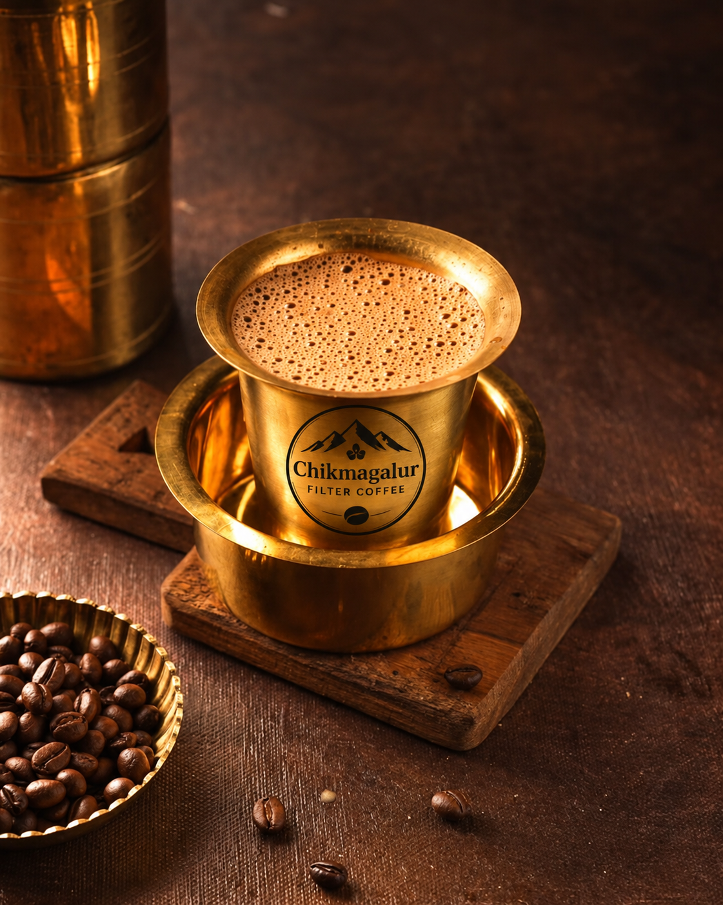

OUR PHILOSOPHY
Not just coffee.
A place you return to.
There is a particular quiet in Chikmagalur—the cool air, the green hills, the scent of coffee blossoms. We bottle that feeling into every roast.
From carefully selected beans to a slow, thoughtful roast, our coffee is made to turn an everyday cup into a small ceremony.
Read our story ↗